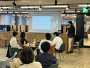

コドモン Product Team Blog
https://tech.codmon.com/
株式会社コドモンの開発チームで運営しているブログです。エンジニアやPdMメンバーが、プロダクトや技術やチームについて発信します！
フィード

成瀬さんに「イベントストーミングによるモデリングワークショップ」を開催していただきました！
コドモン Product Team Blog
こんにちは！ コドモンプロダクト開発部の靍田です。 コドモンでは「Codmon Tech Meet」と称して、3か月に一度、外部の講師を招いて開発に関する学びを深める機会を設けています！ 今回は、2024年2月9日(金)に成瀬允宣さんをお招きして、社内のPdM、エンジニアを対象にイベントストーミングを用いたドメインモデリングのワークショップを開催しました。今回は当日の様子についてレポートしていきます！ イベントストーミングとは ワークショップの目的と内容 目的 講義の内容 当日の流れ 参加者内訳 ワークショップのハイライト 成瀬さんによるイベントストーミング実演 チームにわかれて実際にイベント…
8日前
【入社エントリー】職種を越えてチャレンジしたい！という思いを持ってジョインしたQAエンジニアを紹介します 1
1
コドモン Product Team Blog
こんにちは！ Engineering Officeの岡本です。 今回は数か月前に入社されたQAエンジニアの砂川さんにインタビューしていきます！ 砂川さんは第三者検証でのQAエンジニアの経験を経て、コドモンにジョインを決めてくれました。 コドモンへの入社理由や、QAエンジニアとしての仕事、今後力を入れていきたいことなどを語ってもらいましたので、ぜひご覧ください🚀 オフィスでエンジニアと一緒にペア作業する砂川さん ――簡単に自己紹介お願いします！ QAエンジニアの砂川です。社会人はちょうど10年目です！ 新卒では大学受験予備校のチューターをやっていて、IT業界ではなかったです。紆余曲折を経て、前職…
9日前

EKSを活用したテスト環境構築自動化の仕組みを導入し開発者体験を向上させた取り組み
コドモン Product Team Blog
こんにちは、コドモンのプロダクト開発部でSREをしている渡辺です。 先日私たちのチームでは、EKSを活用したテスト環境を自動で構築する仕組みをCIに導入しました！ 本記事では、自動化の仕組みや工夫した点について紹介していきます。 テスト環境構築を自動構築する以前の課題 テスト環境構築自動化の仕組み 各テスト環境ごとKubernetesリソースを管理する仕組み テスト環境が外部からのトラフィックを受け取る仕組み テスト環境構築からテスト環境削除までの流れ まとめ テスト環境構築を自動構築する以前の課題 これまで、コドモンのテスト基盤はGitHub Actions（以下 GHA）のself-hos…
1ヶ月前
2023年度下半期のPdM登壇まとめ & PdM Daysに登壇します！
コドモン Product Team Blog
こんにちは！ コドモンプロダクト開発部 執行役員 プロダクトマネージャー(以下、PdM)の彦坂です。 ありがたいことに2023年度、登壇の機会を何度かいただいており、今回の記事ではそれらについてまとめていきます！ 事例で学ぶプロダクトマネージャーのお仕事 保育博2023 PdM Days おわりに 事例で学ぶプロダクトマネージャーのお仕事 note.com 10月に行われた助太刀さん主催のこちらのイベントでは、私が2020年に1人目のPdMとして動き始めて以降の3年間のプロダクトマネジメント組織の変遷についてお話ししました！ PdMを採用したいけど知名度がまだまだ低くてなかなかオファー承諾に至…
1ヶ月前
【入社エントリー】チームに新しい風を吹かせ、業務を大幅に改善してくれたメンバーを紹介します！
コドモン Product Team Blog
こんにちは！ プロダクト開発部保護者系機能チームの船越です。 今回は4月から入社＆保護者系機能チームにジョインした鈴木（以下まさてぃ）さんにお話を聞いていきたいと思います！ カフェエリアで作業するまさてぃさん どうしてコドモンを選んだのか？ ――まず始めに自己紹介と今までの経歴を教えてください！ こんにちは。保護者系機能チームエンジニアの鈴木雅人です。まさてぃと呼ばれています。 SESを約2年経験し、研究開発系を約5年続けていたので、エンジニア歴が約7年になります。 ――ありがとうございます！ 前職からコドモンに転職するきっかけなどあればお聞きしたいです！ 「転職しよう！」という強いきっかけな…
2ヶ月前
思い出が持つ力で、子どもたちの自己肯定感を上げていきたい。リクルートPdM組織の部長だった私がコドモンに入社した理由
コドモン Product Team Blog
※こちらはコドモン公式noteからの転載です コドモンの写真共有・販売事業(メモリー事業)で事業責任者とプロダクトマネージャーを担当することになりました白川です。この記事では、私がコドモンに入社した経緯や、入ってみて感じたことなどを赤裸々にお話したいと思います。私はこのメモリー事業自体にとても大きな価値を感じておりまして、この事業を通じて子どもを取り巻く環境に対してより多くの幸せを生み出し続けたいと本気で考えています。 「コドモンってどんなことやってるの？」「どんな人が働いてるの？」とご興味を持ってくれた方に読んでいただけると嬉しいです！ これまで なぜ転職しようと思ったのか なぜコドモンを選…
3ヶ月前
CoDMON Tech Meet に freee QAの湯本剛さんをお招きしました！！
コドモン Product Team Blog
こんにちは！ プロダクト開発部でQAエンジニアをしている砂川です。 今回は、2023年11月16日(木)にfreeeのQAエンジニアの湯本剛さん(以降：ゆもつよさん)をお招きして、アジャイル開発におけるQAというテーマで講義とワークショップをしていただきましたので、レポートしていきます！ Codmon Tech Meet とは？ 背景 講義内容 ~アジャイル開発におけるQAプロセスのあり方~ ワークショップ内容 ~テスト設計のプロセス~ メンバーの感想 感じたこと Codmon Tech Meet とは？ プロダクト開発部で3か月に一度、外部から講師をお招きして開発に関する学びを深める場を作っ…
3ヶ月前
組織を横断した取り組みに注力するEngineering Officeとは - コドモン編
コドモン Product Team Blog
メリークリスマス！ Engineering Officeのおかぱるです🎄🎅 こちらの記事はコドモン Advent Calendar 2023とEngineering Manager Advent Calendar 2023の25日目の記事です。 私が所属するEngineering Officeは「開発チームの機動力を上げる」ことを目指し、組織横断での取り組みの推進や組織課題の解決などに注力をしています🔥 Engineering Officeがどんなことを目指し、具体的にどんな仕事をしているのかについて紹介していければと思います。同じように組織に向き合っている方の参考になったら嬉しいです...！…
3ヶ月前
フロントエンドのポーリング処理を単体テストした話
コドモン Product Team Blog
こちらの記事は「コドモン Advent Calendar 2023」の 24日目の記事です🎅 qiita.com こんにちは！ コドモンプロダクト開発部エンジニアの関口です。 みなさまはsetTimeout関数を利用していますか？ setTimeout関数は一定時間後に指定した関数を実行させることができる関数で、私はリトライ処理などでよく使っています。最近、珍しくフロントエンドからバックエンドAPIをポーリングする処理のためにsetTimeout関数を利用する機会がありましたので、その際に得た学びについて書きます。 やりたかったこと 悩みどころ 単体テストで品質を担保するために やってみた結果…
3ヶ月前
New Relicアラート設定テンプレートを作って、アラート設定をシンプルにしよう！
コドモン Product Team Blog
こちらの記事は「コドモンAdvent Calendar 2023」と「New Relic Advent Calendar 2023」の 23日目の記事です🎅 こんにちは！ コドモンSREチーム期待の星、三口です💫 22日目の西銘さんからキラーパスをいただきました。 ↓↓西銘さんのアドカレはこちら↓↓ New Relicをお使いのみなさん、アラート設定の管理に困ったことはありませんか？ 今回は、私が直面したNew Relicアラート設定の課題を克服すべく、アラート設定のテンプレート化に取り組みましたので、ご紹介します。 New Relicのアラート設定の管理に困っている方は、ぜひ参考にしてみてく…
3ヶ月前
10分で作る！ PHP x Lambda 環境 by AWS CDK
コドモン Product Team Blog
こちらの記事は「コドモン Advent Calendar 2023」の 22日目の記事です🎅 qiita.com こんにちは、プロダクト開発部の西銘です！ 最近、業務でPHPをLambdaで動かす実装をしたのですが、環境構築がちょっと面倒だったので、 AWS CDK (以下、CDK) を使って簡単に始める方法をご紹介しようと思います！ 題して、 10分で作る！ PHP x Lambda 環境 by AWS CDK の始まり〜 はじめに 前提 なぜ PHP x Lambda ？ なぜ AWS CDK ？ PHP x Lambda 環境の構築手順 1. 作業環境準備 2. CDKプロジェクト構築 …
3ヶ月前
Github Environmentsでデプロイパイプラインにレビューを搭載する
コドモン Product Team Blog
こんにちはメリークリスマス！ コドモンプロダクト開発部のチャブです。 こちらは「コドモン Advent Calendar 2023」の20日目の記事です！ 概要 コドモンのプロダクトではCI/CDのプラクティスを取り入れています。開発者のローカル開発環境からユーザーの手に届くまでの過程をなるべく効率よく、素早くするために、積極的にツーリングを取り入れています。今回は、Github actionsのEnvironmentsを用いてデプロイメントワークフローにレビューを取り入れた話をします。(今回紹介する承認機能をプライベートレポジトリで利用するにはGitHub Enterpriseが必要になりま…
3ヶ月前
XPを主体的に学ぶためのチーム内LTを実施しました
コドモン Product Team Blog
こちらはコドモンAdvent Calendar 2023の19日目の記事です🎅 qiita.com こんにちは！コドモンプロダクト開発部のまさてぃです。 チームで開発手法や言語を学ぶ際に輪読会をすることは多くあると思いますが、今回は輪読会ではなくチーム内LTを採用してみてよかったことを紹介します。 輪読会の課題 コドモンではアジャイル開発のXP（エクストリーム・プログラミング）を採用していますが、私の所属するチームではXPに関する知見が溜まっていなかったため、輪読会を実施していました。 毎週開催しており参加率も高い状態で続けられていて、メンバーがそれぞれ得られた知見を共有する場にもなっており有…
3ヶ月前
React における Global state の管理法を比較してみた
コドモン Product Team Blog
プロダクト開発部の渡邊です。 私が所属するチームでは、React を使ったマイクロサービスの開発を行っています。 Global state については、Zustand というライブラリを使って管理しています。 私は数か月前に他のチームから異動してきたのですが、それまで Zustand を使ったことがなかったので 理解を深めるためにその他の手法との比較をしてみました。 本記事では React の Global state の管理手法について、3通りの手法を比較しながら紹介します。 ※サンプルコードを載せていますが、可読性を考慮して一部のコードを省略しています。 React の状態管理の基本と重要…
3ヶ月前
Decorator パターンでコントローラーの肥大化を抑える話 #デザインパターン
コドモン Product Team Blog
こちらの記事は「コドモン Advent Calendar 2023」の 17日目の記事です🎅 qiita.com こんにちは！プロダクト開発部の宮平です。 コントローラークラスに責務を持たせすぎて、コントローラークラスが肥大化することはありませんか？ 今回はデザインパターンの「Decorator」パターン（以下デコレータ）で肥大化を抑え、コントローラークラスで行っていた処理を凝集度高く分割し、再利用性を高める方法についてご紹介しようと思います。 ※留意事項 通常、コントローラをデコレートする方法として、フレームワークが提供するMiddleware（ミドルウェア）と呼ばれる一般的な概念1があり、…
3ヶ月前
Chrome拡張ツールでデプロイフローを改善する
コドモン Product Team Blog
こちらは「コドモンAdvent Calendar 2023」の16日目の記事です。 qiita.com こんにちは！ プロダクト開発部エンジニアの宮島です！ そろそろクリスマスが近づいてきましたね！ 私は家族でクリスマスプレゼントを毎年渡し合っているのですが、サンタさん(パートナー)からクリスマスプレゼントとして何をもらおうか考え中です。 最近はランニングにハマっているので冬用のランニングウェアか、お高い技術書でももらおうかなと思っています。 先日、デプロイフローを改善するための一環としてChrome拡張ツールを開発しました。 Git差分を絞り込み表示できるツールになりますが、本記事では作ろう…
3ヶ月前
クエリチューニングは一日にして成らず
コドモン Product Team Blog
コドモンのカレンダー｜Advent Calendar 2023-Qiitaの15日目の記事です。 こんにちは。コドモンプロダクト開発部の青木です。好きなアンパンマンのキャラクターはナットーマンで、好きなセリフは「ねばねばギブアップ」です。 今回はデータベースのクエリチューニングで苦心し、そこで得た教訓を紹介させていただきます。 開発を行っていたサービス内容 教訓 その要求は叶えられますか？ 現状の仕様を理解し、実現可能性を検討しましょう。 基本に忠実に。カーディナリティ、データの分布を意識しましょう。 クエリの実行計画だけを信用しない。本番相当のデータ量で負荷試験を行いましょう。 要求が変われ…
3ヶ月前
GaugeとPlaywrightをGitHub Actionsで実行する際に工夫していること
コドモン Product Team Blog
こんにちは！プロダクト開発部の関根です。 飛行機好きの息子のために飛行機が見られるお出かけスポットやいい感じのYouTube動画を探す毎日です。 さて、コドモンではATDDでソフトウェアを開発しており、E2EテストのツールとしてGaugeやPlaywrightを利用しています。 今回は、E2EテストをCI基盤であるGitHub Actions上でも動作させるために工夫していることをいくつか紹介したいと思います。 CI環境におけるE2Eテストの流れ GitHub Actionsを用いたE2Eテストの実行プロセスは以下の通りです。 Workflowが開始されると、最初にk8s環境へのデプロイ用コン…
3ヶ月前
M2 MacBook AirにローカルLLMを入れてみた
コドモン Product Team Blog
こちらは「コドモンAdvent Calendar 2023」の12日目の記事です。 qiita.com こんにちは！プロダクト開発部の成本です。 昨今AI技術が急速に浸透しており、弊社でも今年Github Copilotが導入されました。書いている途中のコードが自動補完されたり、質問に対して的確な答えを提示してくれる優れものです。これだけでも普段の開発効率が劇的に向上しましたが、SNSでは「AIの発展でエンジニアの働き方が今後も大きく変わり続ける」との声が絶え間なく届いてきます。そこで今回は重めの腰をあげてLLMが開発プロセスをどのように変えていくのか、私物のMacBook Airを使って検証…
4ヶ月前
チームで学ぶTDD輪読会
コドモン Product Team Blog
こちらはコドモン Advent Calendar 2023の11日目の記事です🎅 qiita.com こんにちは！コドモンプロダクト開発部の村松です。 コドモンでは1週間につき半日、業務時間を自己学習に使える0.5投資制度があります。 今回は0.5投資制度を使い、チーム内で行ったTDDの輪読会について紹介します！ 輪読会スタートの背景 輪読会の進め方 輪読会のメリット チームでの変化 テストを先に書くのが当たり前に 小さくテストし、開発サイクルを回す意識 問題の言語化と改善 todoリストの活用 おわりに 輪読会スタートの背景 コドモンでは以前、t_wadaさんにレガシーコード改善ワークショッ…
4ヶ月前
新卒1年目エンジニアの個人開発インフラ事情🌱
コドモン Product Team Blog
こちらは「コドモンAdvent Calendar 2023」の10日目の記事です🌱 qiita.com こんにちは！ プロダクト開発部でエンジニアをしている23新卒の藤村です🏐 新卒研修のアウトプットも兼ねて取り組んでいる個人開発について、特に学びの大きかったインフラまわりに焦点を当ててお話しします！ 開発の狙い 研修のアウトプットをする狙いの他に、バックエンドを自分で作ることを経験する狙いがあります。 これまでの個人開発では、バックエンドをすべてFirebaseに任せていたので未知の世界でした。 また、個人のプロダクトを育てることで ユーザーが何を求めているか悩んだり システムを止めずに負債…
4ヶ月前
対話型CLIライブラリのInquirer.jsを試してみた
コドモン Product Team Blog
はじめに この記事は「コドモン Advent Calendar 2023」9日目の記事です！ qiita.com こんにちは、コドモンプロダクト開発部の尾沼です。 最近対話型CLIアプリを作成してみたいなと思い、Node.jsやシェルスクリプトで入門してみました。 対話型CLIのイメージとしては、Vue CLIが挙げられます。 Vue CLI 複雑なプロンプトでも容易に実装できる方法がないか調べていたところ、対話型CLIアプリを簡単に実装できるInquirer.jsというライブラリを見つけたのでご紹介します。 Inquirer.jsとは Inquirer.jsは、Node.jsを使用した対話型…
4ヶ月前
負荷試験がわからない問題をちょっとだけ明るくしてみた件について
コドモン Product Team Blog
コドモンのカレンダー | Advent Calendar 2023 - Qiitaの8日目の記事です。 こんにちは。QAエンジニアのこやまです。 社内で実施している負荷試験を改めて考えてみた足跡 🐾 について、ご紹介します 前提 弊社の負荷試験 課題 1.ガイドラインを見てもどのように負荷試験を行うかわかりにくい 課題を解決しにいく 1.ガイドラインをリニューアル 2.負荷試験用のテスト仕様書を新規作成 さらによくするには あとがき 前提 弊社の開発プロセスでは、テスト工程は必ずQAエンジニアが実施するわけではありません つまり「テスト」の対応が初めての開発エンジニアが負荷試験に挑むことがあり…
4ヶ月前
コードサンプルで学ぶMockKの使い方
コドモン Product Team Blog
こちらは「コドモン Advent Calendar 2023」の 7日目の記事です qiita.com こんにちは。プロダクト開発部の上代です。 私のチームではKotestを使用してテストコードを書いており、モッキングライブラリのMockKを採用しています。 MockKはKotlin専用のモッキングライブラリのため、モックの作成と管理がとてもやりやすいと思っています。 今回はコードサンプルを用いて、MockKの使い方を紹介していきます。 前提条件 バージョン Kotlin 1.8.21 MockK 1.13.8 テスト対象 テスト対象として以下のコードを用意しました。 interface Us…
4ヶ月前
AWS CloudTrail から垣間見る AWS Step Functions の挙動
コドモン Product Team Blog
この記事は コドモン Advent Calendar 2023 6日目の記事です！ こんにちは。Webエンジニアの八木です。 コドモンテックブログ初投稿＆アドベントカレンダーということもあり、趣味全開の内容にしてみました。 今回の記事では、AWS Step Functionsの挙動をAPIレベルで追ってみます！ AWS Step Functionsとは、様々なAWSサービスを呼び出すことのできる、サーバレスなワークフローサービスです。 他AWSサービスの呼び出し方法にはいくつか種類がありますが、各種方法が実際にどのように連携されているのか気になったため、CloudTrailを使って処理を追って…
4ヶ月前
輪読会でチームの共通言語を作ったら開発しやすくなりました
コドモン Product Team Blog
こちらの記事は「コドモン Advent Calendar 2023」の 5日目の記事です🎅 こんにちは、業務改善エンジニアの本田です。 業務改善エンジニアは、プロダクトの開発ではなく、コドモンの社員が利用する社内システムの開発に携わっています。最近はシステムの刷新を進めており、社員の業務をさらに効率よく進められるよう、日々改善を行っています！ 今回は、私たちのチームがシステムの刷新に着手する前に、技術書の輪読会を実施することで、開発をスムーズに行うための共通言語を作り上げたことについてお伝えします。 輪読会を始めた目的 輪読会のやり方 本の選定 開催頻度 進め方 前半30分 後半30分 輪読会…
4ヶ月前
【入社エントリー】フルリモートUXリサーチャーから、フルリモートPdMにジョブチェンジしました
コドモン Product Team Blog
こちらの記事は コドモン Advent Calendar 2023 の4日目の記事です。 こんにちは、7月1日にコドモンにジョインし、写真共有・販売サービスのプロダクトマネジメントを担当しています、佐久間せんかと申します。 かれこれ5年ほど、首都圏の企業に勤めながら、地元である北海道北見市で、最愛の家族とのんびり、ときに騒がしく暮らす生活を送っています。 この度、フルリモートUXリサーチャーから、フルリモートプロダクトマネージャー(以下、PdM)にジョブチェンジというチャレンジングな転職を果たしましたので、行動と気持ちの棚卸しがてら、入社エントリーを書かせてください。 そして、この記事が コド…
4ヶ月前
console.logをかわいくしてデバッグタイムを楽しもう🎄
コドモン Product Team Blog
こちらの記事は「コドモン Advent Calendar 2023」の 3日目の記事です 🎁 qiita.com こんにちは、コドモンプロダクト開発部の関根(せきねこ)です。Webアプリケーションエンジニアをしています。 突然ですが、みなさんはWebフロント開発のデバッグ、どうしていますか？ debugger *1 でブレークポイントを設定したり、 console.log *2 で値を確認したりしますよね。私も毎日のように使っています。 そこで今回は console.log での確認作業をちょっと楽しくしてくれるライブラリ consola を紹介します。 consolaとは セットアップ 基本…
4ヶ月前
GaugeでE2E並列化を試した話
コドモン Product Team Blog
こちらはコドモン Advent Calendar 2023の2日目の記事です🎅 qiita.com こんにちは！ コドモンプロダクト開発部の加藤です。 今回はGaugeで並列実行を試した話を紹介します。 Gaugeとは 並列化に取り組んだ背景 並列化の取り組み 利用したコマンド コマンド利用時の注意点 実施手順 よかったこと・難しかったこと よかったこと 実行時間の短縮 難しかったこと 初期化処理の実現 最後に Gaugeとは Gaugeは自動テストフレームワークです。 コドモンでは、ブラウザ自動操作テストツールのPlaywrightと併用して、E2Eテストを作成しています。 gauge.or…
4ヶ月前
まさか、行動指針が形骸化していない、だと？
コドモン Product Team Blog
こんにちは。コドモンプロダクト開発部の関です。今年もAdvent Calendarが始まりました。 こちらの記事は コドモン Advent Calendar 2023 の1日目の記事です🎅 初日はコドモンの行動指針*1の一つ「目的から考えよう」をテーマに、コドモンのエンジニアがどのような価値観に基づき、どのように活動しているかを伝えられる記事になったら嬉しいなと思い、執筆しています。 この記事では、私が所属するチームが「目的から考えよう」を体現して成長している過程について紹介します。 今年2023年の4月に、私はコドモンに入社しました。入社してからのほとんどの期間をこの記事で取り上げるチームで…
4ヶ月前